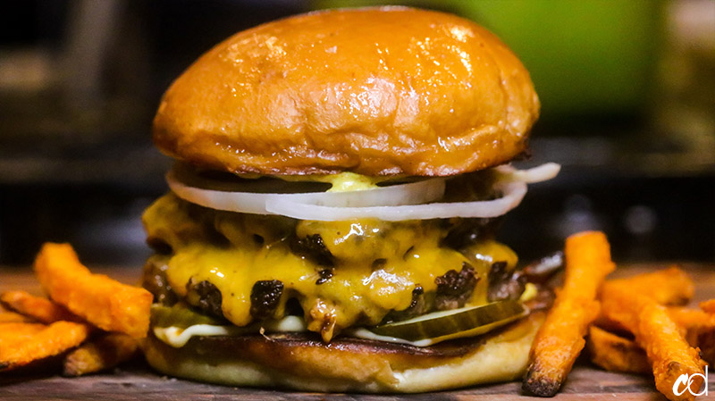

SMASHBURGER

Truck Stop smashburger
A a great burger to take you back to back to those Road trips of yesteryear!
Ingredients
- 500g Minced Beef
- 250gm Diced Onions
- 2 Slices of American Cheese
- 2Tbsp tomato Sauce
- 1 Pickled Gerkin
- 2Tbsp of Mayonnaise
- 1Tbsp of Hot English Mustard
- 2 Brioche Buns
- 2Tbsp Butter
- Salt and Pepper to taste
Method
- Very Lightly make four balls of mince the size of your hands
- Add butter to brioche buns and toast on a Flat Grill until golden brown
- Once toasted add the four beef balls in place of the buns and smash down with your spatula until desired thickness
- At the same time add the onions in pile near the meat
- Cook until the edges start to turn dark brown but the centre is still red
- When ready turn the patties and at the same time add the cooked onions to the top of two patties
- Top all four of the patties with a slice of American cheese
- whilst the cook prepare your buns with Sauce and pickles
- Once the patties are ready remove and stack on the buns